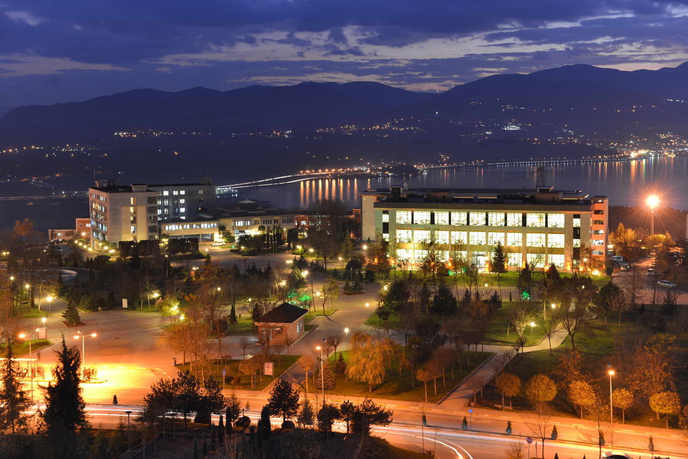
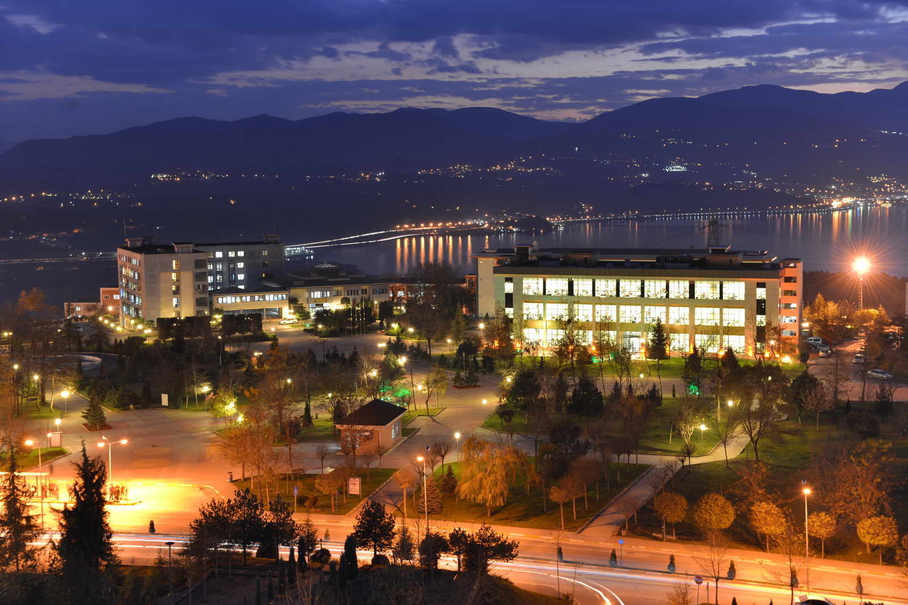

Merhaba, ben Yağmur Kaftar. 20 yaşındayım ve Sakarya Üniversitesi'nde Bilgisayar Mühendisliği 1. sınıf öğrencisiyim. Bilgisayarlarla olan ilgim ve merakım beni bu alanda bir kariyer yapmaya yönlendirdi. Üniversite hayatım boyunca programlama, veri yapıları ve yazılım geliştirme gibi konulara odaklanarak bilgi ve becerilerimi geliştirmeye çalışıyorum. Ayrıca, teknolojiye olan ilgim ve yenilikleri takip etme tutkum beni sürekli olarak kendimi geliştirmeye teşvik ediyor. Kendi kişisel website'imde bu yolculuğumu paylaşmayı ve diğer insanlarla deneyimlerimi paylaşmayı umuyorum.
Hakkımda
❃ Merhaba! ❃
Benim adım Yağmur. Sakarya şehrinde yaşayan bir Bilgisayar Mühendisliği öğrencisiyim. İlkokuldan lise sonuna kadar Samsun'da yaşadım ve bu süre boyunca şehrimdeki eğitim kurumlarına devam ettim.
Küçük yaşlardan itibaren okula karşı hatırı sayılır bir sempati beslediğimi sıkça belirten ailemin desteğiyle okul öncesi ve ilkokul deneyimimi tamamladıktan sonra Samsun’da bulunan Özel Çağdaş Bilime Yükselim Okulları’nda ortaokul ve lise dönemlerimi tam burslu olarak okudum. Lise hayatım boyunca geleceğim için sosyal ve akademik olarak kendimi geliştirebilmek adına eğitimlere, seminerlere ve çeşitli etkinliklere katıldım ve liseden okul birincisi olarak mezun oldum.
2021-2022 döneminde üniversite okumak için Sakarya’ya geldim. İlk yılımda İngilizce hazırlık okudum ve şu an Sakarya Üniversitesi Haşim Gürdamar Bilgisayar ve Bilişim Bilimleri Fakültesi, Bilgisayar Mühendisliği bölümü 1. Sınıf öğrencisiyim.
Eğitim hayatım boyunca, kendimi yetiştirmek için yaptığım tercihlerimde kendimce en doğruyu bulmak için çok çaba harcadım ve bu yolda karşıma çıkan zorluklar benim bugünkü kişiliğim ve başarılarım üzerinde etkili olmuştur. Gelecekte, öncelikle iyi ve adaletli bir insan; daha sonrasında başarılı ve alanında yetkin bir mühendis olmak gibi başlıca hedeflerim var ve bunları gerçekleştirmeye çalışıyorum.
Merak ettikleriniz ve iletişim kumanız için gerekli bilgilere iletişim kısmından ulaşabilirsiniz. Daha fazla bilgi bulabilir, projelerime göz atabilir ve benimle iletişime geçebilirsiniz. Birlikte çalışmak veya herhangi bir konuda bilgi alışverişinde bulunmak için sabırsızlanıyorum!
Teşekkürler ve görüşmek üzere,
Yağmur.
 

Eğitim
Okullar
- Özel Çağdaş Bilime Yükselim Okulları
2017-2021
- Sakarya Üniversitesi
Bilgisayar Mühendisliği
2021-2026